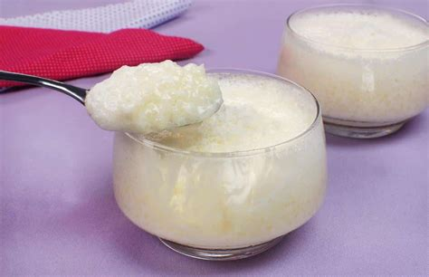

Creme de Tapioca
Aka crème de persane

Description
A fresh, creamy dessert with the pleasant chewiness of tapioca and a sweet, custard-like taste.
Ingredients
- 8 generous tablespoons of Tapioca
- 500ml milk
- 8 tablespoons sugar
- 4 eggs
- Vanilla
- (optional) chopped fruit
Steps
This is delicious and unfortunately, not something to make in large quantities cause it's only really good for a day.
- Put the milk, tapioca and a pinch of salt into a pan
- Bring very gently to a boil
- Off the heat, mix in the egg yolks and the vanilla (or whichever flavouring)
- Return to the heat and cook gently for 2 minutes, stirring constantly
- In a separate bowl, beat the egg whites until stiff, grandually adding the sugar
- Gently fold into the cream mixture
- Place into the fridge to chill
Home